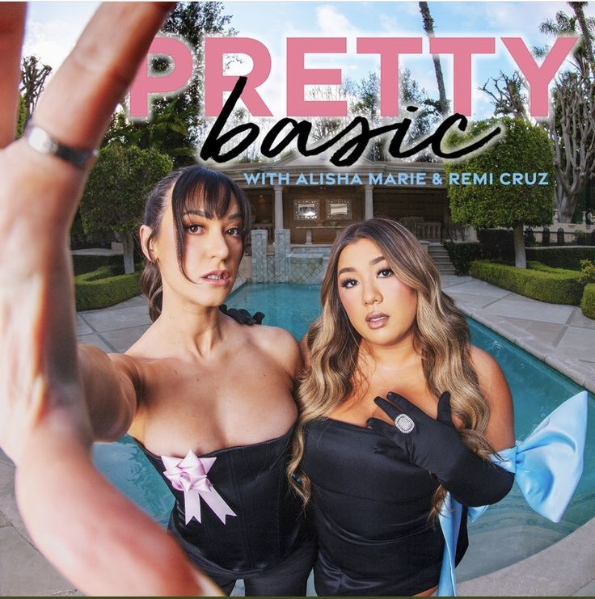

Your podcasts:

Scrubs & Soy Sauce

Closet confessions

Trying not to care
On repeat:

True crime podcast
Rotten Mango
Current obsession?

Tais-toi

Crying in public

Pop Apologists
Similar to your past podcasts

Brighter days ahead

Pretty basic